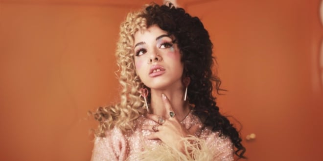

<HTMl lang="es"></HTMl>
<head>
    <meta charset="UTF-8">
    <meta http-equiv="X-UA-Compatible" content="IE-edge">
    <meta name="viewport" content="width=device-width, initial-scale=1">
    <title>Trilogía "Cry Baby"</title>
    <link rel="stylesheet" href="estilos.css">
</head>
<body style="margin-left: 2%; margin-right: 2%;">
    <h1 class="centro" id="titulo">Los Mensajes Subliminales en Las Letras de Melanie Martinez</h1>
    <h2 class="centro">Si tocas la imagen de Melanie te muestra más info! </h2>
    <a href="roundandround.html"></a>
    <h2 class="centro" id="ae">Sus Inicios</h2>
    <h3 >Melanie Martinez es una cantante, actriz, fotógrafra, productora, directora de sus propios visuales y compositora estadounidense. Con ascendencia dominicana y puertorriqueña. </h3>
    <h3>Empezó a publicar covers en YouTube a la edad de 14 años, (2009) luego de aprender a tocar la guitarra por su cuenta, en 2012, a la edad de 17 años entra al programa de talentos 
     The voice haciendo un cover innovador de Toxic, Britney Spears.
     Un detalle para resaltar es que mientras cantaba y tocaba la guitarra, también estaba tocando la pandereta CON SUS PIES.  </h3>
    <h3>De todas maneras, fue eliminada en la quinta semana. Pero eso no la detuvo de irse de gira sumándole a los covers canciones orgininales.</h3>
    <a class="boton" href="https://www.youtube.com/watch?v=NjQsUExc8CE">MELANIE EN THE VOICE</a>
    <h2 class="centro" id="aa">Cry Baby</h2>
    <h3>Lanza su primer álbum en 2015 titulado justamente Cry Baby, el personaje principal de esta saga. El album está completamente compuesto por metáforas que describen
     sentimientos y situaciones comunes en la sociedad, todas explicadas con un elemento propio de la niñez, tales como: Dollhouse (Casa de muñecas), Milk and Cookies (Leche y galletas),
     por dar algunos ejemplos. Cada una de las canciones, en el orden que están en el álbum, va contando poco a poco la historia de la niñez de Cry Baby. Este culmina cuando ella finalmente logra aceptarse. </h3>
    <h3>Paralelamente a esta historia, lo interesante es que las canciones también cobran sentido en si mismas, tratan temas como las familias disfuncionales, relaciones tóxicas,
     superioridad masculina, dependencia emocional y hasta pretty priviliege (beneficios de ser linda). Así comp también hay canciones que en sí mismas no tienen mucho sentido, 
    y que solo están ahí para que la historia siga con su curso.</h3>
    <h2 class="centro" id="ee">K-12</h2>
    <h3>El segundo álbum que compone esta saga fue lanzado en el 2019, muestra a Cry Baby ya más grande entrando en la secundaria, relata como es su lucha para adaptarse
        y critica varios aspectos de las sociedades y culturas que suelen crearse en esta. Al mismo tiempo esta escuela es descripta como un lugar maldito y corrupto,
        de una manera bastante tétrica y al mismo tiempo fantasiosa. Cuenta también con una película en la que se van acompañando las canciones con un contexto visual y que
        no deja lugar a dudas respecto a los temas minuciosamente tratados en cada canción, tales como el abuso de poder, acoso sexual, la industria musical y trastornos alimenticios.
    </h3>
    <h3>Con este último lanzamiento, Melanie ya confirma tener un estilo extravagante y único, habiendo dedicado 4 años a esta película con el objetivo de ilustrar su álbum, no decepcionó a nadie
        y da a entender perfectamente lo que quiere decir, sin abandonar en ningún momento su estética.
    </h3>
    <h2 class="centro" id="ii">Portals</h2>
    <h3>Portals es el último lanzamiento de Melanie, y también la última parte de esta saga, en la que Cry Baby finalmente muere. Pero el punto que quiere demostrar la artista con todo el concepto del álbum, 
        es que aunque su cuerpo ya no exista, espíritu sigue por allí, viviendo en el espacio. Intenta dar esperanza de que hay vida después de la muerte. Para representar esta relatividad de la vida y los cuerpos,
        Melanie se convierte en una especie de bicho rosa bastante peculiar, desencadenñandose de su forma como humana en la tierra. Este album esta inspirado en varios libros que ella estuvo leyendo sobre experiencias
        cercanas a la muerte y lo que las personas han visto en estados de hipnosis. Cuenta también con una perspectiva distinta y más lejana de situaciones interpersonales vistas desde un punto de "todo fue parte de
        la vida pasada".
    </h3>
</body>
